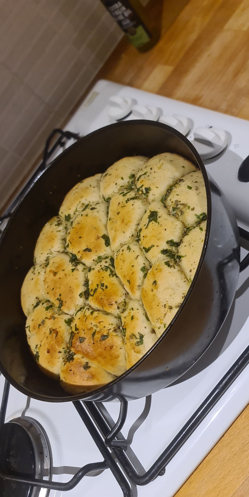

Focaccia Recipe

An Italian focaccia recipe.
This focaccia is made by making a batch of dough and then rolling it into balls.
The balls are all placed inside a tin where it will rise before being baked. This will give it
a unique appearance and a more rustic look.
The bread is topped with a herb and garlic butter spread across the top before baking.
This adds flavour and also gives a lovely appearance.
- 500g Strong Bread Flour
- 380ml Warm Water
- 7g Yeast
- Teaspoon of Salt
- 3tbsp Olive Oil
- 50g Butter
- 3 Cloves of Garlic
- Handful of Chopped Parsley
- Mix the flour, water, yeast, salt, and oil together in a bowl, ensuring the salt and yeast do not touch.
- Mix until the ingredients form a ball of dough, and knead for 10 minutes until smooth.
- Proof the dough in a warm place until roughly doubled in size.
- Melt the butter and mix in the chopped parsley and minced garlic, and set aside.
- Once the dough is proofed, roll into 20 equal size balls and fit into a tin. Leave the dough to rise
until it fills the tin.
- Brush the bread with the butter mixture, and bake for 20 minutes at 200C or until a golden colour.